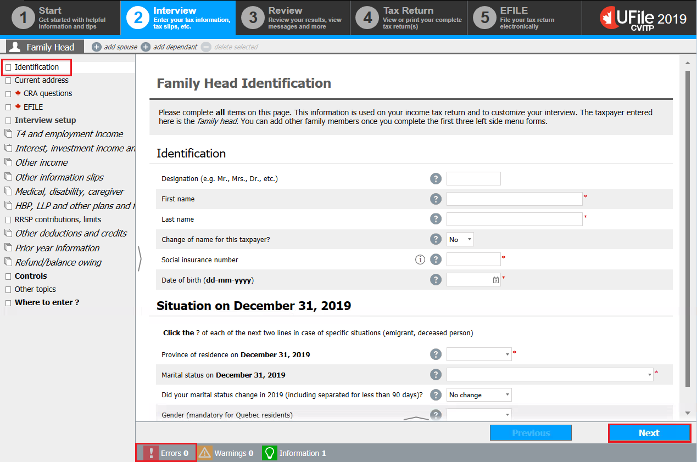

How to enter the identification information
On this page
Identification
Text version
UFile screen
Under Interview tab
Family Head sub-tab
Identification topic is highlighted
Family Head Identification page
Errors button is highlighted
Next button is highlighted
Important note
At the top of each page there are important instructions. Review them before entering any information.
Once you open UFile CVITP and click Start on a new tax file, the Identification section from the Interview tab will display.
On this screen
This is where you will enter an individual’s identification information
Family Head indicates a household’s first individual which you enter into UFile. The second individual you enter will be referred to as spouse or dependant, whichever is applicable. Entering an individual’s details may generate additional sections in the left-side menu, or provide you with tax saving ideas (under the Review tab). For example, when the date of birth is entered for a dependant under 18 years old, UFile will automatically generate a section for Child care in the left-side menu.
Entering an individual’s details may automatically add sections to the left-side menu, or provide you with tax saving ideas (under the Review tab). For example, when the date of birth is entered for a dependant under 18 years old, UFile will automatically add the section for Child care to the left-side menu.
Mandatory fields will be identified by a red asterisk (*).
Nice to know
Clicking Next at the bottom-right of the screen will save the data entered and bring you to the next page under the Interview tab. If any mandatory information is missing, the software will alert you, under Errors, to fill in the required fields.
Spouse interview type

Text version
UFile screen
Under Interview tab
Family Head sub-tab
Add spouse sub-tab is highlighted
Spouse interview type topic is highlighted
Type of information you wish to provide about your spouse page
What information will you provide for your spouse? is highlighted with the following drop-down options:
Complete information (recommended)
Net income only
On this screen
If the individual’s marital status is selected as married or common-law spouse in the Identification section, UFile automatically adds the Spouse interview type page, and navigates to it when you click Next.
On the Spouse interview type page, you will find the question What information will you provide for your spouse? If you select Complete information (recommended) as a response to the question, you need to complete tax returns for both spouses.
To add a spouse, click add spouse found next to the Family Head sub-tab or next to the family head’s name.
If you selected Net income only, UFile adds the Spouse – basic information section in the left-side menu. In the CVITP, you would only select this option when the spouse or common-law partner is a non-resident of Canada for tax purposes.
On this screen
Enter basic spousal information

Text Version
UFile screen
Under Interview tab
Family Head sub-tab
Spouse - basic information topic is highlighted
Spouse – basic information page
Was your spouse a Canadian resident in 2019 (Not applicable for immigrant)? section is highlighted
Net federal income of your spouse (line 23600 of their return) OR net world income in Canadian dollars, if your spouse is a non-resident of Canada. Warning: Do not use an estimated income below the actual. See help for more information section is highlighted.
Enter the spouse or common-law partner’s personal information such as, name and date of birth.
Indicate whether or not the spouse or common-law partner was a Canadian resident in 2022.
If the spouse is a non-resident, their net world income is their net federal income.
For the question Net federal income of your spouse, enter the amount:
- in Canadian dollars
- from all sources both inside and outside Canada
- even if it is zero
The CRA uses this information to calculate certain credits and benefits.
Nice to know
Fill in all of the fields to the best of your ability.
If the spouse is a non-resident and does not have a social insurance number (SIN) or an identification number, UFile will allow you to move to the next screen by leaving the SIN field for the spouse blank or by adding all zeros.
Add a dependant

Text version
UFile screen
Under Interview tab
Family Head sub-tab
Add dependant sub-tab is highlighted
On this screen
To add a dependant, click add dependant found next to add spouse or next to the spouse’s name.